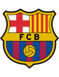

Статистика матча
1-е место, 27 очков
7-е место, 12 очков
В прошлом сезоне Барселона выиграла дома 3:1, а в мае 2026 года уступила в гостях 0:1. Дома Алавесу Барса не проигрывает с сентября 2016 года.
Ольмо, Барджи, Эспарт, Эрик Гарсия — травмы; под вопросом Кунде и Кристенсен
Микель Родригес — травма; Гарсес не сыграет
Барселона проиграла два матча подряд — ПСЖ 2:4 и Реалу 1:2. Алавес не выигрывает шесть туров.
Форма — последние матчи, самый свежий справа. В — победа, Н — ничья, П — поражение.
Разбор матча
Барселона после двух поражений подряд принимает Алавес, который не выигрывает шесть туров. Дома Барса забивает много, а гости слабы в атаке.
Флик не может позволить себе третью осечку подряд: Атлетико и Реал идут в двух-трёх очках. У хозяев проблемы в обороне (нет Эрика Гарсии, под вопросом Кунде), но атака работает. Риск — ротация перед Астон Виллой во вторник.
Барселона — Алавес: прогноз на матч 11-го тура Ла Лиги
Барселона впервые за сезон попала в маленький кризис: после 11 побед подряд на старте команда Ханси Флика проиграла два матча кряду. Ответить нужно в субботу на «Камп Ноу» против Алавеса, который не может выиграть уже шесть туров. Разбираем, кто победит и с каким счётом.
Форма команд
Каталонцы, несмотря на неудачную неделю, остаются лидерами Ла Лиги: 27 очков после десяти туров и разница мячей 40:11. Перед поражениями Барса обыграла Хетафе 3:0, Галатасарай в гостях 4:1 и Бетис 5:2. Затем последовали 2:4 от ПСЖ в Лиге чемпионов и 1:2 в Эль-Класико против Реала.
Алавес начал сезон с разгрома Осасуны 5:2, но с тех пор не побеждает в лиге шесть туров. В последних матчах команда уступила Расингу 1:2, Валенсии 0:1, Атлетико 1:2 и Сельте 1:2, а также сыграла вничью с Атлетиком 0:0 и Малагой 1:1. Гости набрали 12 очков и идут седьмыми, но атака у них слабая.
Составы и потери
У Барселоны много проблем в обороне: травмирован Эрик Гарсия, под вопросом Жюль Кунде и Андреас Кристенсен. Также не сыграют Дани Ольмо, Рууни Барджи и Эспарт. Френки де Йонг здоров, на левом фланге ожидается Бальде. У Алавеса нет Микеля Родригеса и защитника Факундо Гарсеса.
Очные встречи
Барселона выиграла 36 из 51 очной встречи. В прошлом сезоне дома каталонцы победили 3:1, но в мае на выезде проиграли 0:1. На своём поле Алавес не обыгрывал Барсу с сентября 2016 года, а в последних домашних матчах против этого соперника каталонцы обычно побеждали с разницей в два-три мяча.
Мотивация и тактика
Отрыв от Атлетико сократился до двух очков, от Реала — до трёх. Третье поражение подряд Флик себе позволить не может, поэтому команда выйдет в сильном составе и будет атаковать с первых минут. Во вторник Барселону ждёт Астон Вилла в Лиге чемпионов, поэтому при крупном счёте тренер может дать отдых лидерам во втором тайме. Алавес будет играть низким блоком и ловить шанс на контратаке.
Почему мы выбираем именно фору, а не просто победу Барселоны? Чистая победа хозяев стоит слишком мало, а сыграть она должна с очень высокой вероятностью. Фора −2.5 даёт нормальный коэффициент и опирается на два факта: Барселона в этом сезоне забивает в среднем четыре мяча за игру (40 в десяти турах), а Алавес в последних шести турах ни разу не забил больше одного гола. Если хозяева откроют счёт в первом тайме, гости будут вынуждены выйти из обороны, и у атаки Барсы появятся свободные зоны. В ставках на Барселону — Алавес также стоит учитывать, что хозяева после двух поражений играют за реабилитацию перед своими болельщиками, а значит, вряд ли сбавят темп при счёте 2:0. Главный риск — ранние замены перед матчем с Астон Виллой.
Варианты ставок
- Основной прогноз: фора Барселоны (−2.5), то есть победа в три мяча и больше, за 1.77.
- Альтернатива: тотал больше 3.5 за 1.53.
- Альтернатива: обе забьют — нет за 1.90.
Итог
Барселона дома забивает очень много, а Алавес почти не создаёт моментов в атаке. После двух поражений хозяева выйдут наказывать соперника. Риск ставки — проблемы в обороне Барсы и возможная ротация перед еврокубком. Мы оцениваем вероятность победы в три мяча и больше примерно в 57%, поэтому берём фору −2.5 за 1.77.
Вопросы о матче
Кто победит в матче Барселона — Алавес?
Фаворит — Барселона: она лидирует в лиге, а Алавес шесть туров без побед. Мы ставим на крупную победу хозяев с форой −2.5 за 1.77.
Сколько голов будет в матче Барселона — Алавес?
Ждём много голов от хозяев. Тотал больше 3.5 стоит 1.53, в матчах Барсы в этом сезоне в среднем забивают больше пяти мячей.
Забьют ли обе команды?
Скорее нет: Алавес слабо атакует, «обе забьют — нет» стоит 1.90. Однако оборона Барселоны ослаблена травмами.
Кто не сыграет за Барселону?
Травмированы Ольмо, Барджи, Эспарт и Эрик Гарсия, под вопросом Кунде и Кристенсен.
Прогноз — оценка вероятности исхода, а не гарантия результата.